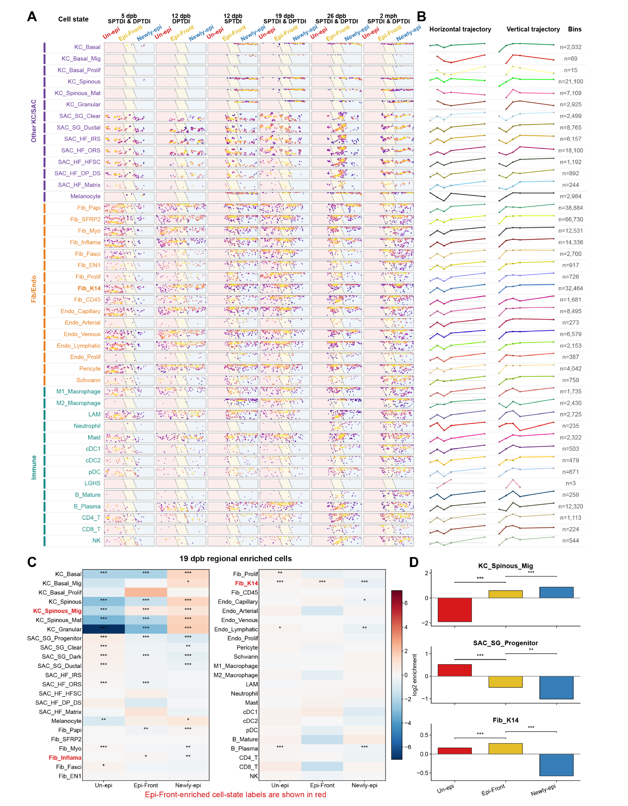

Cell-state positions, regional distributions and spatial comparisons supporting the epithelialization front.
Executed supporting analyses and/or archived sources; see panel-specific status
Source data · Panel manifest · Execution report

| Panel | Description | Status |
|---|---|---|
| S5A | (A) Spatial maps of atlas states in the six displayed human sections spanning 5, 12, 19, and 26 dpb and 2 months post-healing, including both 12-dpb injury depths. | not_run |
| S5B | (B) Horizontal-position and depth summaries, with the corresponding number of retained spatial bins. | not_run |
| S5C | (C) Regional enrichment of cell states in unepithelialized, front, and newly epithelialized tissue at 19 dpb, expressed as log2 enrichment. | not_run |
| S5D | (D) Regional log2 enrichment of KC_Spinous_Mig, SAC_SG_Progenitor, and Fib_K14 in unepithelialized, front, and newly epithelialized regions. | not_run |